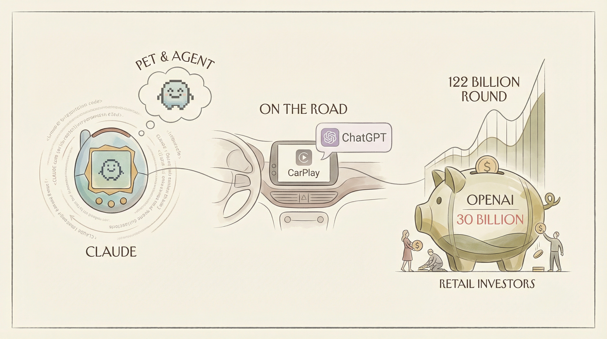

Anthropic泄露Claude Code部分源代码，引发关注。
两克伴AIGC日报
2026-04-01 星期三

本期关注：OpenAI完成1220亿美元融资估值8520亿美元，Claude Code源代码泄露催生开源多智能体框架open-multi-agent，ChatGPT支持Apple CarPlay实现车载交互，AI行业融资与开源技术并行发展。
📰 行业动态
ChatGPT支持Apple CarPlay，实现车载语音交互。
OpenAI完成1220亿美元融资，估值达8520亿美元。
AI模型反馈初创公司Yupp关闭，融资未果。
NVIDIA投资20亿美元于定制芯片供应商Marvell Technology。
🔥 今日焦点
近日，Reddit用户u/JackChen02曝光了Claude Code的源代码，包含超过50万行TypeScript代码，涉及查询引擎、工具系统、协调模式、团队管理等多个方面。作者深入研究了其架构，重点关注多智能体编排层，包括目标分解、团队系统、消息总线、任务调度等。基于此，作者从头开始重新实现了这些模式，打造了一个独立的开源框架——open-multi-agent。
这一开源框架的核心在于其模型无关性，能够与Claude和OpenAI等大型语言模型协同工作。open-multi-agent通过协调器模式自动将目标分解为任务，并分配给不同的智能体执行，从而实现高效的多智能体协作。
Anthropic近日确认，其旗下热门AI代码助手Claude Code的部分内部源代码发生泄露。据公司声明，此次泄露并非安全入侵，而是由于人为失误导致的发布打包问题。幸运的是，泄露内容未涉及任何客户敏感数据及凭证信息。这一事件对AI领域产生了重要影响，一方面提醒了开发者对源代码安全性的重视，另一方面也促使行业加强内部管理，防止类似事件再次发生。Anthropic表示，正在采取措施防止类似情况再次发生，这一事件将推动AI行业在安全性和可靠性方面取得进一步发展。
---
LangChain与MongoDB宣布达成战略合作伙伴关系，共同打造了一款基于数据库的AI代理堆栈——LangChain + MongoDB。该堆栈在MongoDB Atlas上构建生产级AI代理，内置向量搜索、持久化内存、自然语言查询以及端到端可观测性等功能。
这一合作对于AI领域具有重要意义。首先，它简化了AI代理的开发和部署流程，使得开发者无需从头构建底层基础设施，即可利用MongoDB Atlas的强大数据库功能。其次，通过整合向量搜索和自然语言查询，LangChain + MongoDB为AI代理提供了更强大的数据处理和分析能力，从而提升其智能水平。此外，持久化内存和端到端可观测性功能，确保了AI代理的稳定运行和高效管理。
📚 深度长文
本文由Barry Conklin撰写，深入探讨了大型语言模型（LLMs）的发展趋势。文章指出，在LLMs的早期阶段，我们见证了推理和编码能力每迭代一次就实现10倍增长的奇迹。然而，如今这种跳跃式进步已逐渐转变为渐进式提升。唯一例外的是领域特定智能，其中仍以真正的跳跃式改进为常态。文章强调，当模型与组织深度融合时，其潜力将得到极大释放，为AI模型定制化提供了新的视角。本文不仅揭示了LLMs发展的新趋势，还提出了AI模型定制化的必要性，为AI从业者提供了宝贵的思考和借鉴。
---
本文揭示了Anthropic公司意外泄露的Claude代码源码，其中包含未发布的特性、内部代号以及这款新兴AI产品的未来走向。作者Alberto Romero深入剖析了这些泄露信息，揭示了Claude代码的内部结构和发展方向。文章的核心观点在于，通过分析泄露的源码，我们可以窥见AI技术发展的趋势和潜力。关键论据包括：未发布的特性可能预示着AI领域的创新突破；内部代号揭示了研发团队的构思和规划；而Claude代码的未来走向则为我们提供了行业发展的参考。对于AI从业者而言，本文具有较高的阅读价值，它不仅揭示了技术发展的最新动态，还提供了独特的见解和深度思考。
---
在《Claude Dispatch and the Power of Interfaces》一文中，作者Ethan Mollick深入探讨了人工智能在现实应用中面临的挑战。文章的核心观点是，尽管人工智能技术日益成熟，但我们往往缺乏有效的工具来充分发挥其潜力。Mollick通过分析多个案例，揭示了界面设计在AI应用中的关键作用。
文章指出，界面设计不仅影响用户体验，更决定了AI的效能。以Claude Dispatch为例，Mollick阐述了界面设计如何影响用户对AI的信任和接受度。他强调，一个优秀的界面能够简化操作，降低用户的学习成本，从而提高AI的实用性。
🛠️ 产品推荐
Show HN: Browserbeam是一款专为AI代理打造的浏览器API。该产品旨在解决传统浏览器在自动化网页浏览和数据采集过程中存在的交互问题。Browserbeam通过优化浏览器交互体验，使AI代理能够更高效地“看”懂网页，减少无效token的浪费，并准确判断页面加载状态。该产品凭借其独特的AI能力和创新设计，为技术从业者提供了一种高效、便捷的网页自动化解决方案。
---
Show HN: SoloAI，一款专为初创企业主和企业家设计的AI赋能业务操作系统。核心功能为Mimi AI智能代理，可自动处理重复性业务工作，释放创始人精力。目前包含三个模块，界面简洁，快速上手，支持多货币。通过AI技术，解决创始人日常繁琐事务，助力企业高效发展。
---
Memdir是一款基于文件的本地内存解决方案，专为AI代理设计。它通过将事实存储在`memory.md`文件中，并将聊天历史记录在每日日志中，实现持久化记忆功能。启动时，Memdir利用用户提供的嵌入模型构建内存中的语义索引，确保数据的一致性。该产品简化了AI代理的依赖管理，无需API密钥，为开发者提供了一种高效、便捷的内存管理方式。Memdir的AI能力体现在其文件基础的记忆机制和高效的语义索引构建，为AI应用提供强大的数据支持。